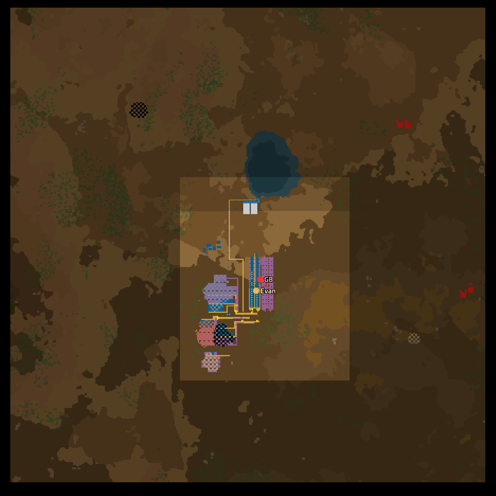
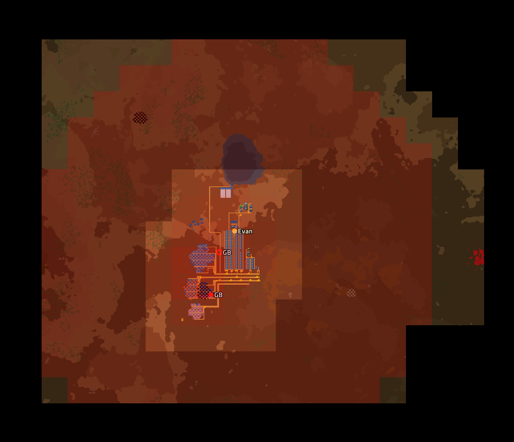

Factorio 01 重新起步
xhj 成天不上线，因为配置升级了，我和 golden_brick 打算重新进入 Factorio
新开了个档，之前主世界布局太大了，铁路线布的不行，改太麻烦了。
找了个草星分布较好的种子，启动！
这是一场失败太空移民行动，殖民飞船引擎过热损毁，剧烈的碰撞让船员全部昏迷。
醒来时，你和其他幸存者发现自身处于一颗植被繁茂的星球，谢天谢地它拥有与地球及其相似的气候，至少你不用为食物烦恼。
幸存者们将其称为 “新地星” （Nauvis）
然而不幸的是，飞船几乎完全损坏，拆解成铁板是它能贡献的唯一价值，更不用提修复它以重新起航。
看来新地星将成为你们未来很长一段时间的家了。

维生服自带的探矿仪显示，四周存在几个小矿点，其拥有少量煤矿，铜铁，石矿可以供给基本的工业产品。
或许，你们可以这些矿物中锻造基础物资，发展工业，制造火箭，最终离开你们被困的星系。
新地星大气中氧气充足，燃烧煤炭是获取能源的不二方法，在能够产生电力之前，热能是唯一的能量来源。
使用热能采矿机开采出少量铜铁煤，使用机自科技包，殖民者很快研究并制造出了第一台蒸汽机。
恭喜，你们刚刚步入了蒸汽时代。蒸汽发电能够提供足够的电力，将会成为前期主要电力来源。

用传送带将电力采矿机开采的煤炭送到发电站，电力抓取臂将其送入燃煤锅炉，锅炉将水泵泵取的水加热至 165°，足以供蒸汽机发电。这种原始但可靠的发电支撑起了初具雏形的基地
你们将矿物统一汇入一条总线，这种小型总线布局支持随意扩建，十分方便。
接下来，你们规划了一些基础物资产线，例如物流传送带，机械抓取臂，这会方便之后的基地建设。

就在一切看似欣欣向荣之时，奇怪的撕咬声从基地一侧传来。
赶去探查的殖民者被眼前景象所震惊：一种从未见过的巨型撕咬虫正在啃食采矿机——什么样的咬合力才能撕裂钢铁？
你们从飞船带下来的武器终于派上了用场，撕咬虫毙命于手枪之下。
看来这颗星球上你们并不孤单，工业生产带来的污染会引来异形。

你们利用研究出的科技制造了数个机枪炮塔，他们将伫立于基地外，监视范围内一切敌人。机枪炮塔的射速能够对付成群的异形——至少目前如此。
但虫群的袭扰十分频繁，机枪炮塔开始产生战损，你们朝异形来的方向探寻，来到了他们的巢穴。
这些巢穴会以污染为食，孕育这些可怖的生命。显而易见，新地星上不会只有这一个虫巢，看来你们的发展不会轻松。
虫巢防治的同时，你们布置好了物流科技包产线。物流科技包将允许更先进的物流研究，或许会提供截然不同的物流运输系统。

纵然这颗星球危机重重，但科技的发展将会提供自卫手段，无论如何，你们确信终有一天将能够返回母星。